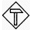
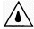

Elektrische Anlagen und Betriebsmittel dürfen nur von einer Elektrofachkraft oder unter Leitung und Aufsicht einer Elektrofachkraft den elektrischen Regeln entsprechend errichtet, geändert und instandgehalten werden.
Elektrische Anlagen und Betriebsmittel müssen den elektrotechnischen Regeln entsprechen und sind regelmäßig wiederkehrend zu prüfen.
 Siehe § 3 DGUV Vorschrift 3 bzw. 4 "Elektrische Anlagen und Betriebsmittel" und DGUV Information 203-071 "Wiederkehrende Prüfungen elektrischer Anlagen und Betriebsmittel – Organisation durch den Unternehmer"
Siehe § 3 DGUV Vorschrift 3 bzw. 4 "Elektrische Anlagen und Betriebsmittel" und DGUV Information 203-071 "Wiederkehrende Prüfungen elektrischer Anlagen und Betriebsmittel – Organisation durch den Unternehmer"
Elektrische Betriebsmittel sind z. B. Bohrmaschinen, Handleuchten, Mess- und Prüfgeräte.
Die Unternehmerin oder der Unternehmer hat dafür zu sorgen, dass die von ihnen betriebenen und genutzten elektrischen Betriebsmittel den elektrotechnischen Regeln entsprechen.
Werden elektrische Betriebsmittel mit Netzanschluss verwendet, müssen diese über einen besonderen Anschlusspunkt betrieben werden.
 Siehe § 3 DGUV Vorschrift 3 bzw. 4 "Elektrische Anlagen und Betriebsmittel" und DGUV Information 203-006 "Auswahl und Betrieb elektrischer Anlagen und Betriebsmittel auf Bau- und Montagestellen"
Siehe § 3 DGUV Vorschrift 3 bzw. 4 "Elektrische Anlagen und Betriebsmittel" und DGUV Information 203-006 "Auswahl und Betrieb elektrischer Anlagen und Betriebsmittel auf Bau- und Montagestellen"
Als besonderer Anschlusspunkt bei Schornsteinfegerarbeiten gilt z. B. eine ortsveränderliche Schutzeinrichtung.
Schutzverteiler, z. B. ein PRCD-S als tragbare Fehlerstrom-/Differenzstromschutzeinrichtung oder ortsveränderliche Schutzeinrichtungen, dürfen an Steckvorrichtungen ortsfester Anlagen betrieben werden (siehe Abb. 18).

Abb. 18 PRCD-S
Flexible Leitungen müssen Gummischlauchleitungen vom Typ H07RN-F oder gleichwertiger Bauart sein.
Leitungsroller (Kabeltrommel) müssen schutzisoliert und für erschwerten, rauen Betrieb geeignet sein sowie Spritzwasserschutz besitzen (siehe Abb. 19).
 |
rauer Betrieb |
 |
Spritzwasserschutz |
| doppelte oder verstärkte Isolation (keine Metalltrommel) |
Abb. 19 Symbole auf elektrischen Betriebsmitteln
Handgeführte Elektrowerkzeuge müssen mit Anschlussleitungen Typ H07RN-F oder gleichwertige Bauart versehen sein. Bis 4,00 m Länge sind auch H05RN-F-Leitungen oder gleichwertige zulässig.
 Siehe § 3 DGUV Vorschrift 3 bzw. 4 "Elektrische Anlagen und Betriebsmittel" und DGUV Information 203-006 "Auswahl und Betrieb elektrischer Anlagen und Betriebsmittel auf Bau- und Montagestellen"
Siehe § 3 DGUV Vorschrift 3 bzw. 4 "Elektrische Anlagen und Betriebsmittel" und DGUV Information 203-006 "Auswahl und Betrieb elektrischer Anlagen und Betriebsmittel auf Bau- und Montagestellen"
Einen sehr guten Schutz gegen elektrische Gefährdungen bietet die Verwendung von Elektrohandmaschinen mit Akku.
Bei Arbeiten in der Nähe elektrischer Freileitungen und deren Anschlüssen sind die Schutzabstände nach Tabelle 2 einzuhalten.
Für die Bemessung der Schutzabstände ist das Ausschwingen von Leitungsseilen und der Bewegungsraum der Beschäftigten einschließlich der von ihnen bewegten Werkzeuge zu berücksichtigen.
 Siehe § 6 Abs. 2 DGUV Vorschrift 38 "Bauarbeiten"
Siehe § 6 Abs. 2 DGUV Vorschrift 38 "Bauarbeiten"
Tabelle 2 Schutzabstände zu elektrischen Freileitungen
| Nennspannung | Schutzabstand |
| bis 1000 V (üblicher häuslicher und gewerblicher Bereich) | 1,00 m |
| über 1 kV bis 110 kV | 3,00 m |
| über 110 kV bis 220 kV | 4,00 m |
| über 220 kV bis 380 kV oder bei unbekannter Nennspannung |
5,00 m |
Nicht isolierte elektrische Freileitungen oder elektrische Übergabepunkte unter 1000 V (1 kV) müssen zu Laufstegen einen Schutzabstand nach oben von 2,50 m, nach unten und seitlich von 1,25 m aufweisen.
 Siehe § 3 DGUV Vorschrift 3 bzw. 4 "Elektrische Anlagen und Betriebsmittel"
Siehe § 3 DGUV Vorschrift 3 bzw. 4 "Elektrische Anlagen und Betriebsmittel"
An Abgasanlagen, an denen Schornsteinfegerarbeiten ausgeführt werden, müssen nicht isolierte elektrische Freileitungen für Nennspannungen unter 1000 V (1 kV)
aufweisen (siehe Abb. 20).

Abb. 20 Schutzabstände der seitlich verlaufenden nicht isolierten Freileitungen auf dem Dach zu der Schornsteinmündung
Sind an der Mündung der Abgasanlage Einrichtungen vorhanden, z. B. geschlossene Schornsteinaufsätze, die eine Berührung eines über die Mündung hinaus geführten Werkzeuges mit unter Spannung stehenden Teilen ausschließen, oder sind die Freileitungen isoliert, dürfen abweichend elektrische Freileitungen für Nennspannungen unter 1kV bis auf einen waagerechten Mindestabstand zur Außenwand der Abgasanlage
herangeführt sein (siehe Abb. 21).

Abb. 21 Verringerung der Schutzabstände bei Mündungen mit Schornsteinaufsätzen zu seitlich verlaufenden nicht isolierten Freileitungen auf dem Dach
Elektrostatische Staubabscheider sind entsprechend der Betriebsanleitung zu betreiben und vor der Reinigung bzw. Überprüfung spannungsfrei zu schalten und vor Wiedereinschalten zu sichern.
Der Unternehmer oder die Unternehmerin hat dafür zu sorgen, dass bei Arbeiten in der Nähe von Photovoltaikanlagen diese nicht berührt oder betreten werden.
Falls Arbeiten im Bereich von Photovoltaikanlagen durchzuführen sind, ist zuvor eine eindeutige Arbeitsanweisung und Freigabe durch eine Elektrofachkraft des Eigentümers oder der Eigentümerin bzw. des Betreibers oder der Betreiberin der Anlage erforderlich.
 Siehe § 6 Abs. 2 DGUV Vorschrift 38 "Bauarbeiten"
Siehe § 6 Abs. 2 DGUV Vorschrift 38 "Bauarbeiten"